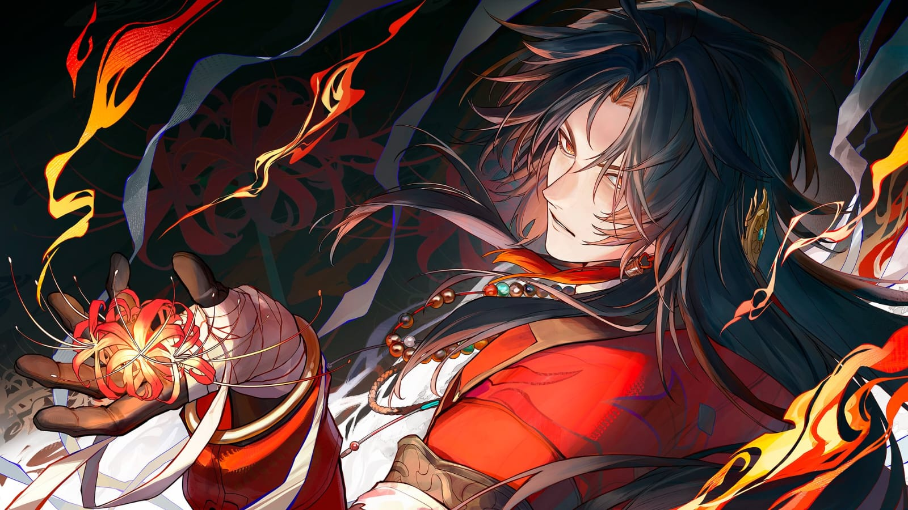
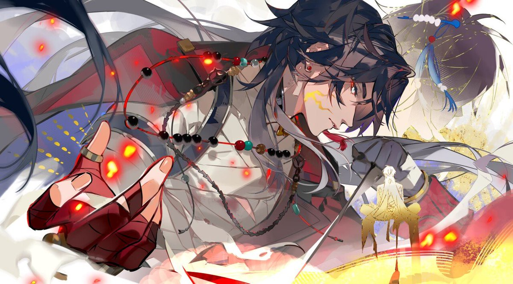
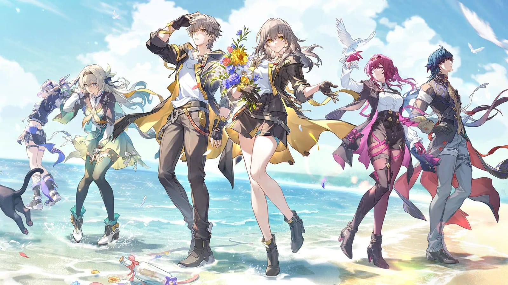
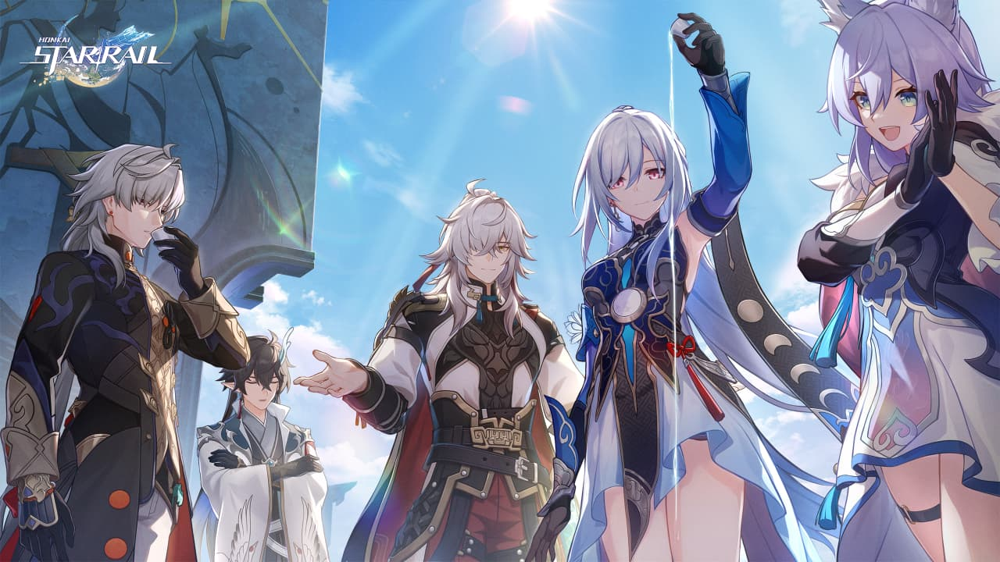
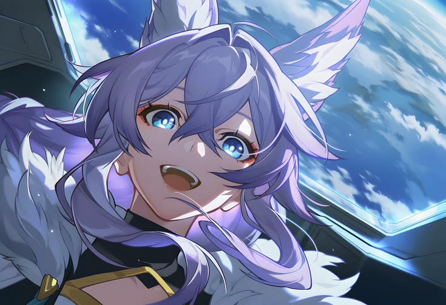

His body is like springwood. His heart is like dead ash. Yet still, a craftsman's spark cling to his fingertips. Ancient grudges flare anew. He vows to send both himself and that God over to the other shore. This body torn asunder, yet holding fast through a thousand temperings into a blade... What answer will it forge?

Yingxing was a gifted craftsman who rose from a childhood of trauma to become a legendary weapon-maker for the Xianzhou. As an esteemed member of the High-Cloud Quintet, he forged iconic weapons and formed deep bonds
with his companions, including Dan Feng and Baiheng. However, his life took a dark turn after the war against the Emanator Shuhu; following Baiheng’s death, Yingxing assisted Dan Feng in a forbidden ritual to defy mortality. The experiment
failed catastrophically, leaving Yingxing cursed with immortality and the ravages of mara.
Driven by intense resentment, Yingxing was eventually hunted and trained by Jingliu, who repeatedly killed him to force him to confront his past karma. His cycle of suffering and vengeance eventually
led him to be recruited by Elio. By joining the Stellaron Hunters, Yingxing accepted a new purpose: navigating the path toward his own "final funeral," seeking an end to his eternal existence and the
destruction of everything he has come to hate.

The Stellaron Hunters, led by the enigmatic Elio, operate under his "script" to manipulate events and prevent the Theory of Four Apocalypses. By leveraging Elio’s precognitive abilities to orchestrate specific outcomes, the group aims to prepare the Trailblazer to ultimately confront Nanook and save the universe. While they formerly focused on Stellarons, their mission shifted with the Trailblazer's arrival, centering instead on guiding them toward this destiny. Notably, the group is accompanied by a mysterious entity linked to Terminus—often mistaken for Elio himself—while maintaining the secrecy of Elio’s true identity and his "special existence."

The High-Cloud Quintet was a legendary group of five heroes whose unity shattered after the tragic death of their comrade, Baiheng. In a desperate attempt to resurrect her, Dan Feng performed a forbidden ritual that resulted in a catastrophic failure. This event led to the group's dissolution: Dan Feng was reincarnated as the exiled Dan Heng, Yingxing was cursed with immortality and became Blade, Jingliu descended into madness, and only Jing Yuan remained to serve as the Arbiter-General of the Luofu.

Student/Developer
Faction: Stellaron Hunters
Age: 16
"Be kind before the darkness comes."